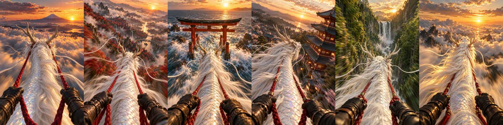

Teddyさん・ゆみパン先生・ユウキ 30分
Teddyさんの曲で作った見本を見てもらい、続けて作るならどう進めるかを決める場です。金額の話は今日はしません。
事前アンケートの回答（10/19）
動画にしたい曲
使う場所
YouTube（横長）と、ショート・リール・TikTok（縦長）の両方
近い動画
音に合わせて色や模様が動く映像
関わり方
やり方を覚えて、最初から自分で作りたい
こんな感じにしたい
参考のTikTok（ドラゴンの背中から見た空の映像）。LINEで「和風の白い龍にしたい」と追加
1 見本を見る
参考のTikTok
AIで作った1枚目
完成した見本（クリックで再生・音あり）
2 どう作ったか
AIに絵を作らせ、その絵をAIで動かしています。
1
参考の西洋ドラゴンを白い和風の龍に替え、夕日の雲海と富士山にした
2
画像生成AIに、欲しい写真を文章で伝えて作る
3
動画AI「Dreamina」に絵を入れ、英語で動きを指示。1分ほどで5秒できる
4
スマホならCapCutで動画と曲を並べるだけ
2 どう作ったか
今は5秒の1場面だけです。場面の候補はもう6枚作ってあります。

雲海と富士山
紅葉の谷
海の鳥居
五重塔
竹林の滝
夕日へ上昇
3 続けて作るなら
曲を出す間隔と、自分で画面を触るのが苦にならないかで決まります。
Teddyさんがやること
曲と「こんな感じ」を送るだけ
向いている人
作業に時間を使いたくない／曲の数が多くない
Teddyさんがやること
1本目は画面を見ながら一緒に。2本目からは自分で
向いている人
迷っている／やり方を見てから決めたい
Teddyさんがやること
最初から自分で作る。困ったら相談
向いている人
曲をよく出す／自分で触るのが好き
3 やり方を教える場合
1回60分・画面共有。各回の終わりに、次までに1人でやってみる宿題を出します。
1回目
ツールの登録から一緒に。画像AIで龍と景色の1枚目を作り、指示文の型をお渡しします
宿題：場面違いの絵を3枚
2回目
宿題の絵を動画AIで5秒ずつ動かします。龍の見た目を揃えるコツもここで
宿題：15秒ぶんのカットをそろえる
3回目
CapCutで拍に合わせてつなぎ、横と縦で書き出し。AI表示を付けて投稿まで
ゴール：15秒版が1本公開できる
そのあと：2本目からは1人で作り、詰まったときだけ相談
4 問題になりそうなこと
フォームでは「色や模様が動く映像」、LINEでは「白い龍に乗る映像」。作り方もツールも別物です
AIは1回ごとに龍を描き直すので、場面が変わると顔や色が少しずつ変わります
動画AIは1回5秒。3分の曲なら5秒のカットが約36本要ります
YouTubeの曲は「©青山マリア」名義です。作詞・作曲・歌が別の人なら、その人の了解が要ります
参考のTikTokの映像に曲を乗せた版は、他の人の作品です。公開には使えません
無料で作れる本数には上限があり、右下にロゴも入ります。続けるならツール代がかかります
4 気をつけること
YouTubeは、本物と見分けがつかない映像をAIで作ったときに申告を求めています。TikTokとInstagramにもAI表示の仕組みがあるので、投稿するときにその場の画面で確かめます。
DistroKidなどでYouTubeの自動照合（Content ID）に登録している曲は、自分の動画でも申し立てが付くことがあります。公開前に配信会社での登録状況を確かめます。
今回の見本には右下に小さく「Dreamina AI」の表示が入っています。仕事として使う前に、商用利用の条件を規約で確かめます。
5 ユウキからの質問
曲の権利。「©青山マリア」名義とのご関係、作詞・作曲・歌は誰か
本命はどちらか。色や模様が動く映像か、白い龍に乗る映像か
この見本の方向でいいか。スピード感はもっと欲しいか
欲しい長さは、サビの15秒か、1曲まるごとか
この先、どのくらいの間隔で曲を出すか
ツールの画面（ほぼ英語）を自分で触ってもいいか
ツール代を払って続けるつもりはあるか。配信会社でContent IDに登録しているか
動画を付けて何を変えたいか。1本目はいつまでに欲しいか
6 次の一歩
決まったら、Teddyさんの曲で15秒版を作ってお渡しします。
今日の見本はそのまま使ってもらって大丈夫です。